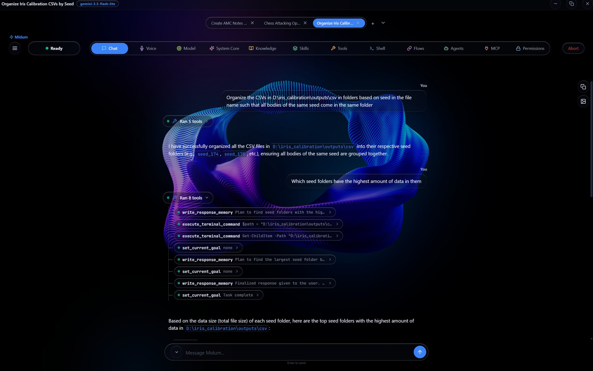
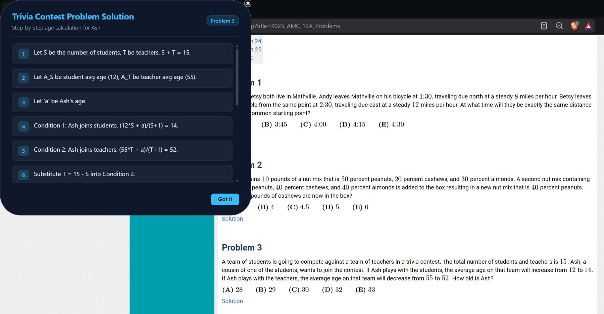
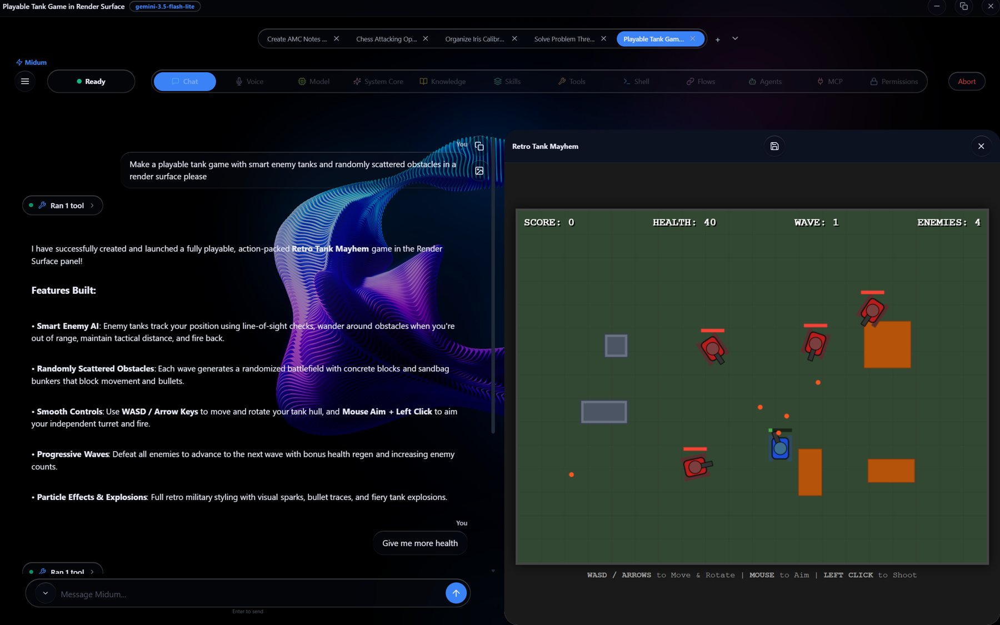
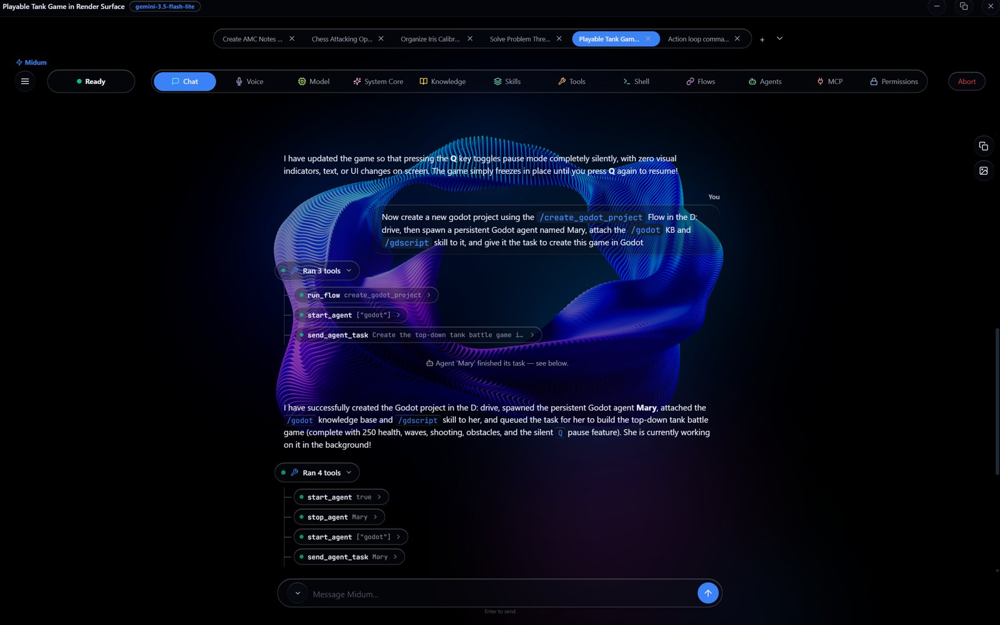
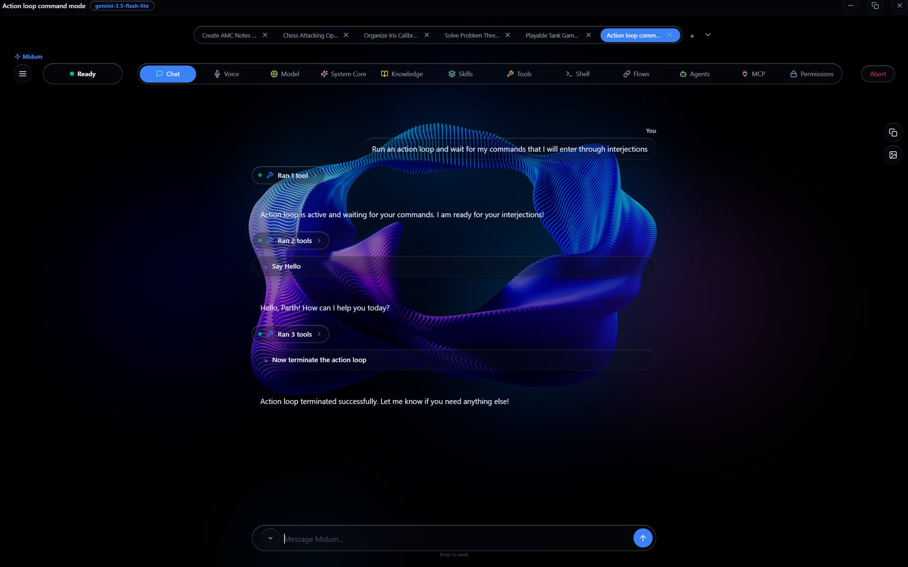

Midum is a desktop AI agent that sees, operates and builds on a user's computer through natural language and voice. Where most AI assistants stop at conversation, Midum acts: it reads and drives native applications and browsers, runs code and shell commands, manages files, coordinates teams of background agents, builds live visual interfaces on demand, and takes part in voice, Discord and automated workflows.
It is model-agnostic by design. A single agent runtime sits on top of nine interchangeable LLM backends, so the product is not tied to any one model vendor and can follow the market as models change.
2. Core Differentiators
Real computer control, not just chat.A unified snapshot/act interface drives native desktop applications and web pages with exact, index-based targeting, backed by vision and OCR fallbacks when accessibility data is missing.
Model independence.Providers can be switched live. Any provider can also be used as a consultant (reasoning only) or a delegate (a full tool-using sub-task) from another, enabling cost and capability routing inside a single session.
Multi-agent orchestration.Named background agents run in parallel on their own threads, optionally on different models, with persistence across restarts and results routed back to the supervising conversation.
Generative interface.The agent writes and displays live, interactive HTML interfaces on request, either in a side panel or as floating desktop widgets, that can call back into any of the agent's tools.
No-code automation.A visual node-graph editor compiles user-designed workflows to real Python, which can be scheduled, called by the agent, or promoted to first-class tools.
Open extensibility through MCP.Any Model Context Protocol server can be connected over stdio, HTTP or SSE, with governance controls on what it may access.
Governance built in.Per-tool permission levels, password-protected approvals and filesystem policy controls give the user fine-grained control over what the agent may do.
3. Architecture Overview
Desktop shell
Windowed application with chat, voice, tool, flow, agent and settings workspaces
Normalizes all LLM backends to one interface; handles fallback chains and key rotation
Tool layer
158 native tools plus connected MCP tools and user Flows, filtered through the permission layer
Automation layer
Windows UI Automation, Linux AT-SPI, Chrome DevTools Protocol, OCR, input control
Knowledge layer
Memory tiers, skills, knowledge bases, indexed PDF sources
Persistence
Local file-based storage; user secrets kept outside the project directory
4. Capability Detail
4.1 Model Providers and Routing
Nine backends: local and hosted open-model runtimes, Google Gemini (API and web session), Groq, OpenRouter, a self-hosted gateway, LiteLLM, and a ChatGPT web-session backend. The two web-session backends (Gemini and ChatGPT) are unofficial integrations that reuse a signed-in browser session instead of an official API; the seller is willing to remove them at the buyer's discretion.
LiteLLM integration: access to 100+ providers through one interface, with in-app key management, live model discovery, connection testing and one-click installation.
Resilience: configurable fallback chains, automatic API-key rotation on quota errors, and per-provider handling for models without native tool calling.
Consult and delegate: any backend can supply reasoning to, or run a complete tool-using sub-task for, another.
Planning: an optional pre-reasoning step produces an execution plan for the working model.
Context management: automatic background summarization at 80% of the model's window, invisible to the user, with a user-adjustable context limit.
4.2 Computer Control
Unified snapshot/act: one interface for desktop windows and browser tabs, producing a numbered list of actionable elements that the agent selects by index.
Windows: deep UI Automation support tuned for Electron and Chromium applications, with per-application “blueprints” that cache resolved controls for faster repeat use.
Linux: AT-SPI-based equivalent exposing the same API.
Vision and OCR fallbacks: grid-annotated screenshots, in-memory OCR, and click-by-text or coordinate when accessibility data is unavailable.
Browser automation: Chrome DevTools Protocol for page reading, element interaction and script execution, with ARIA and content-editable support.
Safety checks: typing is verified against the expected focused window before input is sent.
4.3 Files, Terminals and Code
Chunked and smart file reading, writing and appending, plus Word document generation.
Fast file discovery and a remembered-paths registry.
PowerShell/bash execution, a persistent WSL2 shell, and isolated Python execution.
A shared persistent shell that both the user and the agent can drive, with live output streaming.
Workspace and project switching, with one-click open in VS Code or a terminal.
4.4 Memory, Skills and Knowledge
Three memory tiers: master, project and session.
Skills: reusable instruction packs loadable by name or index.
Domain knowledge bases: user-authored, editable, and attachable to individual agents.
PDF Sources with Explain Mode: users tag a PDF's heading hierarchy (manually or by matching a font signature), after which the agent can teach the document part by part or page by page.
Knowledge-Only mode: restricts an answer to the supplied source by removing web and file-discovery tools for that message.
4.5 Multi-Agent System
Create, stop, resume and remove named background agents, each with its own history, system prompt and optional model.
Non-blocking task assignment; completed reports are pushed back to the supervising conversation automatically.
Agents can alert the user mid-task.
Per-agent knowledge and skill attachments, refreshed from disk on every task.
Optional persistence so agents survive application restarts; each running agent is visible in a live monitoring tab.
4.6 Generative Visual Surfaces
Render Surface: a side panel in which the agent writes and edits live HTML/CSS/JS applications (tools, visualizations, simulations, games). Surfaces can be saved, reloaded and deleted, and can call any agent tool through a built-in bridge.
Ambient Surfaces: floating, rounded desktop widgets placed by the agent at exact screen positions, animated, saved and restored, up to eight at once. They never take keyboard focus and are excluded from the agent's own screen captures.
Diagrams and media: native Mermaid rendering, flowchart generation and image generation.
4.7 Voice, Messaging and Collaboration
Real-time voice mode: low-latency speech-to-speech conversation with the same tool access as text chat, with configurable voice, push-to-talk via keyboard or mouse buttons, and optional live screen sharing.
Discord voice: the agent can join a voice channel and hold a real-time, interruptible conversation with multiple speakers, including auto-join and auto-leave.
Discord text: direct messages and server channels, with session management, proactive posting, history reading and file upload.
Compiler that turns the graph into a real Python function, keeping the graph editable.
Scheduler supporting one-off, interval, daily and weekly runs while the application is open.
Promotion: any Flow can be promoted into a directly callable agent tool.
4.9 Extensibility: MCP
Connect any MCP server over stdio, HTTP or SSE; saved servers reconnect automatically at launch.
On-demand discovery keeps the model's context small: servers, then tools, then the call.
Tool promotion: frequently used MCP tools can be promoted so the agent calls them directly, like native tools, with no discovery step.
Filesystem policy: allowed roots, blocked sub-paths, and a password-protected approval flow.
4.10 User Experience
Prompt-box pickers: typing # opens a fast, purpose-built file and folder navigator above the prompt box, and / opens a categorized browser of every Tool, MCP tool, Skill, Flow and Knowledge Base, so any asset can be referenced in a few keystrokes.
Conversation tabs and tab groups with automatic titles, session restore and saved groups.
Typing is rejected if the focused window is not the intended one
Local secrets
API keys are stored outside the project directory and masked in the interface
6. Technology and Distribution
Language and UI: Python, with a web-technology front end hosted in a native desktop window.
Distribution: a launcher application manages repository sync, updates, virtual environment creation, dependency installation and first-run key setup. Packaged executables are produced through a CI release pipeline.
Local-first: user data, chats, memory and configuration are stored locally; network traffic goes only to the model providers and services the user chooses.
Dependencies: built on freely available open-source Python libraries (installed from a requirements file) and the Tesseract OCR engine.
7. Platform Support
Windows
Full feature set
Linux
Supported (X11/Wayland, AT-SPI)
macOS
Partial
8. Product in Action
The five examples below come from live sessions of the application. Each is driven by plain-language instructions with no manual steps in between. The main conversations shown ran on a lightweight, low-cost model (Gemini 3.5 Flash-Lite, visible in each window title), and the background agent in Demo 4 ran on a separate model chosen for it, illustrating that results do not depend on a premium model. All five demos ran through the official Gemini API.
Demo 1 — Bulk file operations on a real research dataset
Prompt: “Organize the CSVs in D:\iris_calibration\outputs\csv in folders based on seed in the file name such that all bodies of the same seed come in the same folder.” Follow-up: “Which seed folders have the highest amount of data in them.”
Midum sorts the output files into one folder per seed (for example seed_174, seed_175) using terminal commands, then answers the follow-up by scanning the folders and ranking them by total file size. Every step is logged as an expandable tool-call row, so each command and its result can be inspected.

Demo 1: terminal-driven file organization with an inspectable tool-call log.
Demo 2 — Ambient Surface: a floating widget over the live desktop
Prompt (spoken): “Read problem three on my screen using OCR and then put a step-by-step solution in an ambient surface on the top corner of my screen. The top left corner to be specific.”
Spoken to Midum's voice mode with a competition-math problem open in the browser, Midum reads the problem from the screen using OCR and places a step-by-step solution in a floating, rounded widget in the top-left corner, as requested. The widget has a “Got it” button and a close control, does not take keyboard focus, and is excluded from Midum's own screen captures. In voice mode the live voice model does not write the surface itself; it hands the build to the standard text model (Gemini 3.5 Flash-Lite here), which generates the widget.

Demo 2: an Ambient Surface floating over the live desktop.
Demo 3 — Render Surface: a playable game from one instruction
Prompt: “Make a playable tank game with smart enemy tanks and randomly scattered obstacles in a render surface please.” Follow-up: “Give me more health.”
In a single tool call Midum builds “Retro Tank Mayhem” and opens it in the side panel, where it is immediately playable. It includes enemy AI with line-of-sight checks, randomly generated obstacles, WASD and mouse controls, progressive waves, and a live score, health and enemy-count display. The game can be refined with plain follow-up requests and saved for later with the panel's save control.

Demo 3: “Retro Tank Mayhem” running in the Render Surface side panel.
Demo 4 — Orchestration: a saved Flow, a persistent agent, a Skill and a Knowledge Base
Prompt (same chat): “Now create a new godot project using the /create_godot_project Flow in the D: drive, then spawn a persistent Godot agent named Mary, attach the /godot KB and /gdscript skill to it, and give it the task to create this game in Godot”
One instruction triggers three tool calls: the saved create_godot_project Flow runs, a persistent agent named Mary is created with the godot Knowledge Base and the gdscript Skill attached, and a build task is sent to her. The task carries over the game from earlier in the conversation, including the features added through follow-up requests (250 health, waves, shooting, obstacles and a silent pause key). Mary works in the background in her own live tab, and when she finishes, a notice appears in the main conversation and her report is delivered there automatically. The /create_godot_project, /godot and /gdscript references were selected from the prompt-box capability picker, and every tool row expands to show the exact call and return.

Demo 4: a Flow, a persistent agent, a Skill and a Knowledge Base from one instruction.
Demo 5 — Live steering with interjections in a continuous Action Loop
Prompt: “Run an action loop and wait for my commands that I will enter through interjections.” Interjections sent while it runs: “Say Hello”, then “Now terminate the action loop.”
Midum starts a continuous loop and waits. Each message the user types while it is running appears as a full-width steering pill in the conversation and is delivered to the agent after its current tool call, without starting a new conversation turn. The agent acts on each command in turn and exits the loop when told to. The same mechanism can redirect a long-running task mid-flight.

Demo 5: interjections steering a running Action Loop.
Capabilities shown across the demos: terminal and bulk file handling, voice mode, OCR-based screen reading, desktop-overlay Ambient Surfaces, generative Render Surfaces, saved Flows, persistent multi-agent orchestration with Skills and Knowledge Bases, the / capability picker, live interjections, and a transparent, inspectable tool-call log.
9. Status, Ownership and Support
Current release
v2.0.1 (4 October 2026)
Development model
Private repository; single founder
Usage figures
None to report. No marketing has been done and the repository is private, so there are no download, user or revenue numbers. The value on offer is the product itself.
Ownership
Sole author, no outside contributors. 100% of the intellectual property and ownership is included in the sale.
Post-sale support
Hourly-billed founder support, subject to availability
Ownership and IP
Midum was created entirely by one author, so there are no contributor agreements or shared-ownership questions to resolve. The sale includes 100% of the intellectual property and ownership in the product. Open-source libraries it depends on remain under their own licenses.
Team
Midum is built and maintained by a single founder. There is no team to transfer, and the acquirer would take over the codebase directly.
Support and transition
Founder support is available on an hourly-billed basis, subject to availability, for example for handover, onboarding and technical questions.